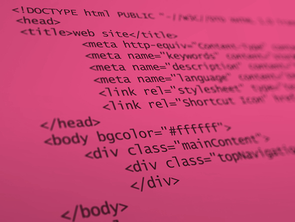

Week 1: Fireside reflections

What's your take on the EDA experience?
The EDA experience seems to be intense, challenging and immersive. My take away from Shareef's talk is that you will get the best out of EDA by relieving yourself of any expectation of what you might get out of the course. Instead, focus your energy on exceeding your own expectations of what you are capable of.
What are your impressions?
My impressions are that EDA isn't trying to sell me a dream. I am guaranteednothing. This is a hardcore educational experience that will, if I commit and allow, lay a foundation of knowledge that I could build upon for the rest of my life.
How do you see yourself engaging with this type of culture?
I see myself engaging well with this type of culture. I am a big believer in the power of cooperation and coordination. I also enjoy teaching and helping others as a way of crystalising the lessons in my brain, so the EDA mentally seems quite a good fit.
Have your expectations of EDA changed?if so, how?
My expectations of EDA have not changed all that much since my initial interview. I always knew that It was going to be a challenge and it has certainly been that. I am enjoying the course more than I thought I would and find myself staying up late into the night tinkering around.
Are you excited to participate in this kind of learning environment? Does it make you nervous?
EDA provides a very unique learning environment and I am really eager to be part of it. I have never struggled learning in the past although I have never felt very comfortable in the institutions I have attended. I don't know if it was because they were too traditional or too impersonal but I already feel a lot more engaged and accountable for my learning through EDA's teaching style.
Week 1: Time and Habits
A brief reflection on time management, efficiency, meditation and everything inbetween
What's your take on the EDA experience?
The EDA experience seems to be intense, challenging and immersive. My take away from Shareef's talk is that you will get the best out of EDA by relieving yourself of any expectation of what you might get out of the course. Instead, focus your energy on exceeding your own expectations of what you are capable of.
What are your impressions?
My impressions are that EDA isn't trying to sell me a dream. I am guaranteednothing. This is a hardcore educational experience that will, if I commit and allow, lay a foundation of knowledge that I could build upon for the rest of my life.
How do you see yourself engaging with this type of culture?
I see myself engaging well with this type of culture. I am a big believer in the power of cooperation and coordination. I also enjoy teaching and helping others as a way of crystalising the lessons in my brain, so the EDA mentally seems quite a good fit.
Have your expectations of EDA changed?if so, how?
My expectations of EDA have not changed all that much since my initial interview. I always knew that It was going to be a challenge and it has certainly been that. I am enjoying the course more than I thought I would and find myself staying up late into the night tinkering around.
Are you excited to participate in this kind of learning environment? Does it make you nervous?
EDA provides a very unique learning environment and I am really eager to be part of it. I have never struggled learning in the past although I have never felt very comfortable in the institutions I have attended. I don't know if it was because they were too traditional or too impersonal but I already feel a lot more engaged and accountable for my learning through EDA's teaching style.
Week 2: Minfulness, meditation and wellbeing
The most important thing I took from Meng's chapter on mindfulness was that I can always be improving myself through his techniques. Meng explains that every time we lose concentration we have an opportunity to be mindful of our loss of concentration and refocus ourselves on the task. Weng compared this to the resistance of lifing a weight at the gym. The resistance in this case is not provided by gravity but is provided by our minds natural tendency for distraction. We acknowledge our distraction and resist further distraction and next thing you know you have performed a mental pull up or dead lift or whatever works for you.
As a runner I find meditation particularly appealing as they both share an element of endurance. I think what draws me to running is that in a world of frustration and complicated decisions I can find order in sense in the straight forward nature of running. To get better at running I don't have to learn a new method, or formula or code each time I put my shoes on. If I just get out there and run and persist at it I will improve. The same seems to be go for meditation. You must simply fight your lizard brains urge to stop.
I found the 2 minutes of mindfulness to be a little brief. I hope over time and with practice I will be able to achieve more with that two minutes. Seems like a really effective way to preempt stress and keep yourself productive.
Week 2: Grid Based Design, Responsive Webpages, and Semantic Structure:
A Brief Overview of Some Webdesign Basics
GRID BASED DESIGN
When you look at a webpage most of the time you will find that it can be broken up into a grid. The grid is a useful of way of organising and displaying content on a page as well as being versatile and easily interchangeable.
We design the grid on the web to take advantage of our users natural left to right reading patterns. For example we may have an image with a headline in larger text that provides information about what the smaller text in the paragraph to left is about.
REPSONSIVE DESIGN
Designing for the web in 2016 means you cannot design specifically for a computer screen, there's a good chance your users will be viewing your page on a huge variety of mobile devices like phones and tablets. This means we have to implement scaleable, repsonsive design. CSS provides a variety of properties and variables that allow us to design for multiple platforms. For example, Defining content size by percentages rather pixels, and using media queries to detect your users screen size and present the content accordingly.
SEMATIC STRUCTURE
In HTML semantic Structure is the way that web designers give context to the content that will be present within a given element in their code. In HTML you have tags such as "p" for paragraph, "li" for list "h" for header and the list goes on. So for example I'm writing an article about semantic structure. I would put the title of my article in an "h1" tag and the body text in a "p" tag. These tags provide context for your content so the browser can present them correctly.
SUMMARY
It seems one of the keys to great webdesign is really paying attention to details that make sure every user has a great experience on your site. By creating well structured and coherently organised pages we can give our the content the best chance to make a pleasing impression on our users and keep them coming back!
Explaining HTML, CSS and the DOM to Newbie

Web Dev Wish List
- Responsive header that draws users eye to latest content i.e articles, blog posts etc...
- Social Media buttons that enables users to share and like my content on twitter and facebook. Gotta get that signal boost, baby!
- Search bar functionality to help users find what they are looking for on my site
- comments sections/forums for users to discuss content on my site
HTML, CSS and the DOM work together to present us with attractive and functional webpages. You could compare each of these languages to the parts of speech an author would use when writing a story. In this case HTML would be the nouns, the objects that exist inside the space you are creating. Let say we've got a table, two chairs, a woman, a man and a gun (just to add some excitement). Now we understand the objects that exist here but we have no understanding of what they look like and how they relate to one another in space. That's where CSS comes in.
CSS takes the objects you want on your page and gives them life. CSS is the Adjectives and verbs in our story. CSS tells us that the man is wearing a blue shirt and the woman is sitting at the table cleaning the gun. Before CSS does its job and explains the relationships between the different objects in our story we have a table stacked on top some chairs and a man stacked on that, then a woman standing on his head, and a gun on her head. It looked ridiculous. Now that we've applied the CSS and we have a much more coherent and sensible idea of what our scene looks like.
Now that we understand the tools we have for writing our story we have to finish and publish it. This is where the DOM comes in. The DOM is like the Contents page. It might tell us that Chapter 1 is called "The man, the seated woman and gleaning gun" but we would have to turn to that page and read further to find out exactly what happens in this chapter. THe DOM summarises all the long windedness of our HTML and CSS story and enables us to navigate to the specific part of the story we would like to understand better.
What is Boxifying Design?
Boxifying, is the process by which a web designer/developer breaks up the content on a page. All content on the web is displayed in boxes. Even if it's a picture of the roundest thing possible like a ball or the moon, I'm sorry, but its going to be inside of a box. When a web developer first approaches a project they take the draft design given to them by a designer and begin to imagine the boxes that will contain all of the different types of content on the page.
"What is the Box Model?"
The box model is the name of the combined parts that make up a box of content on your page. It almost looks like a cross section of the earth's crust. In the center you have the core or the content of your box. This could be paragraph of text, a list, an image, or anything really. Then you have the outer core or the "padding". This part is made of molten rock and it forms a protective boundary between your content and the outside world! Then you have the border, which would be like crust. It's the visible outer layer of your box model. Then finally you have the margin which would be like the atmposhere. It's an invisible barrier between your box and all other boxes on your page. And now I am truly tired of this analogy.